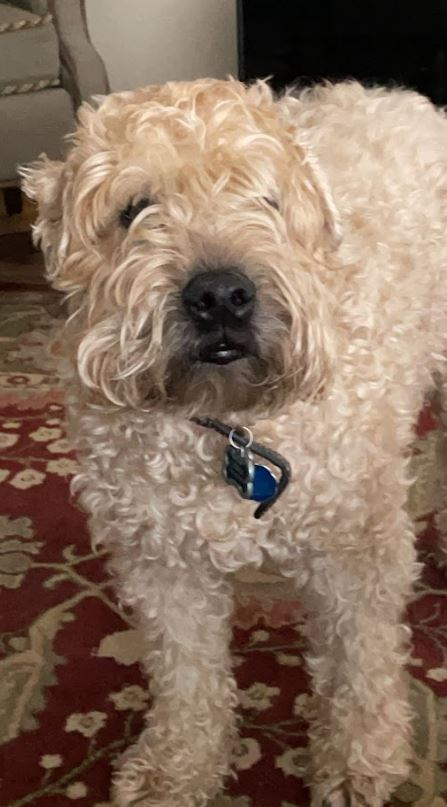

About
My name is Zach Ahr, I'm twenty three years old and I have been living in Colorado
for about fourteen years now!
Early Life
Originally I was born in Mendham New Jersey and lived there until 2004 around the time my
younger brother had been born. After that, my family and I moved to Florida where we lived
until 2009. After living in Florida we moved out to Colorado where we had been taing skiing
trips with our friends and family over the holidays since I was three.
High School & Beyond
I graduated High School in 2019 and very soon after I began taking classes at Arapahoe
Community College Sturm Campus in Castle Rock! The I began attending that campus was
because of the rare collaboration between CSU and ACC allowing me to obtain both my
Associates Degree in Cybersecurity as-well as being able to pursue my Bachelors Degree
in Cybersecurity from CSU-Pueblo. The ability to obtain both degrees without going into
too much student debt was something that I wanted to achieve since I graduated. As it is
a really epidemic here in the United States with so many suffering with student debt from
college. Just last Decemember I obtained my Associates Degree in Cybersecurity from ACC and
I am only one semester and change from completing my Bachelor's Degree in Cyberseurity from CSU-Pueblo
Pueblo.
Overview of Hobbies
In my personal life I have several hobbies and passions that I will go over in more detail on other
pages of this website, but I will briefly list them off: music, hiking, skiing, carwork just to name a few.
Whenever I have a moment of free time, I always go these sources of enjoyment to help ease my mind during
stressful periods of my life!
My Dog
One of the best parts of my homelife is my Wheaten-Terrier Derek! [Named rightfully after the great Derek Jeter].
He is about to turn fourteen years old and he is one of the best friends a man can ask for!
